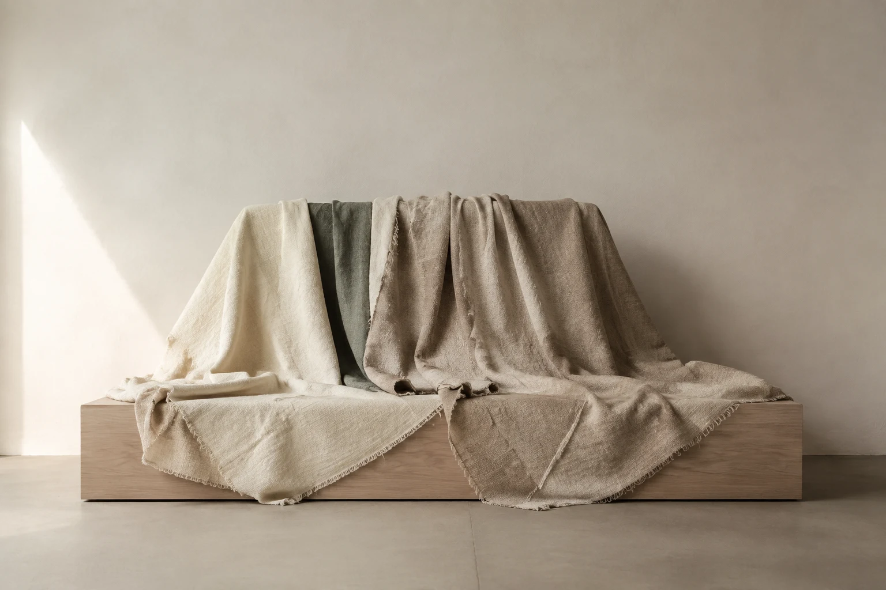
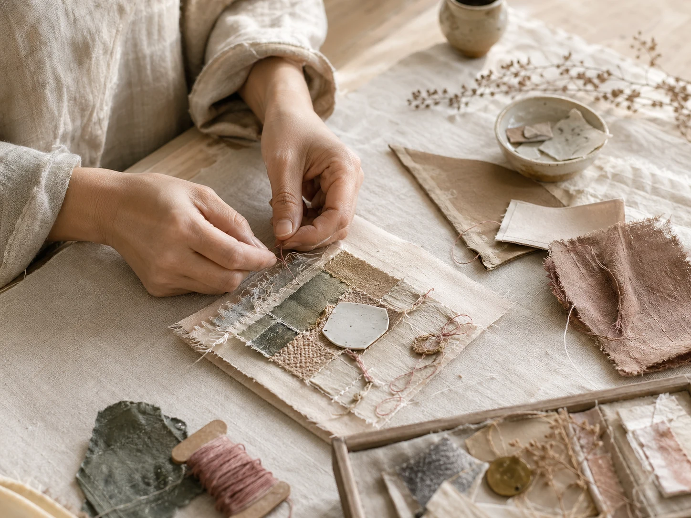

THE BEAUTY IN WHAT REMAINS.イメージビジュアル
REMAKE AS STORY — 01
しまっていた布に、
新しい居場所を。
帯や古布を、もう一度使えるかたちへ。身にまとっていた帯が、食卓の一枚になる。小さな布のかけらが、お茶の時間を彩る。
もとの素材のよさを見つけ、今の暮らしで使うかたちを考えています。残したいのは、布の表情。
布と、手と、そのつづき。
SELECTED WORKS02
布から生まれた、
三つのかたち。
既存資料の実作品写真です。寸法・制作年・受付状況は、正式掲載前に確認します。

THE HANDS BEHIND — 03
布を見つめて、
次のかたちを考える。
リメイクアーティスト、onlyyuuka。帯や古布の色、柄、織りを手がかりに、バッグや小物、インテリアの作品を制作しています。
作り手について